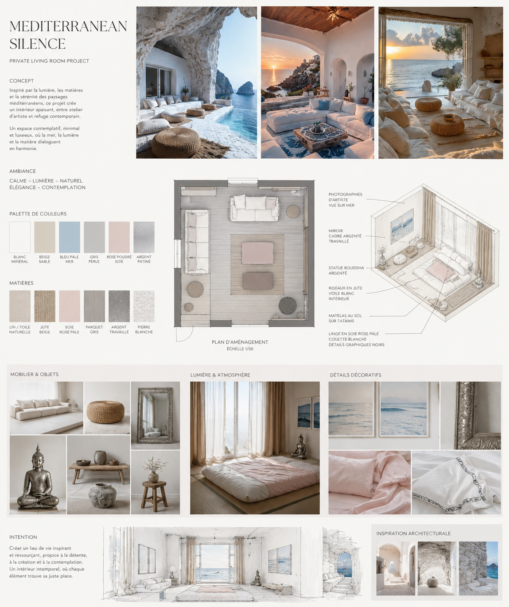
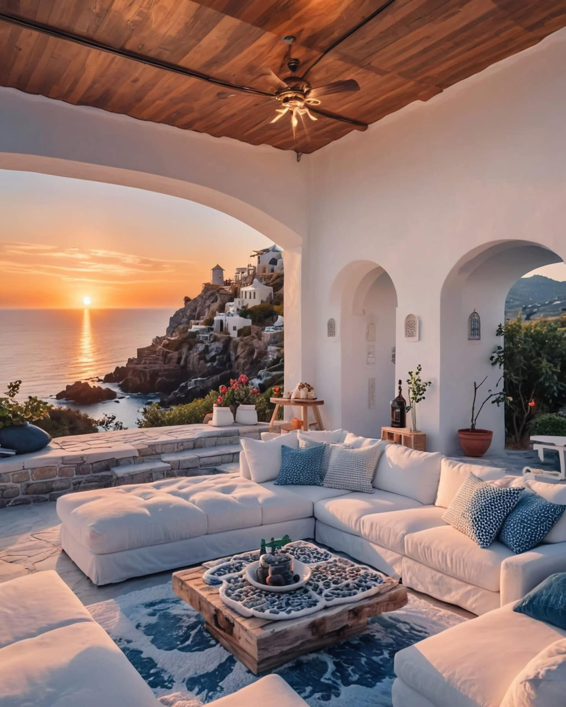
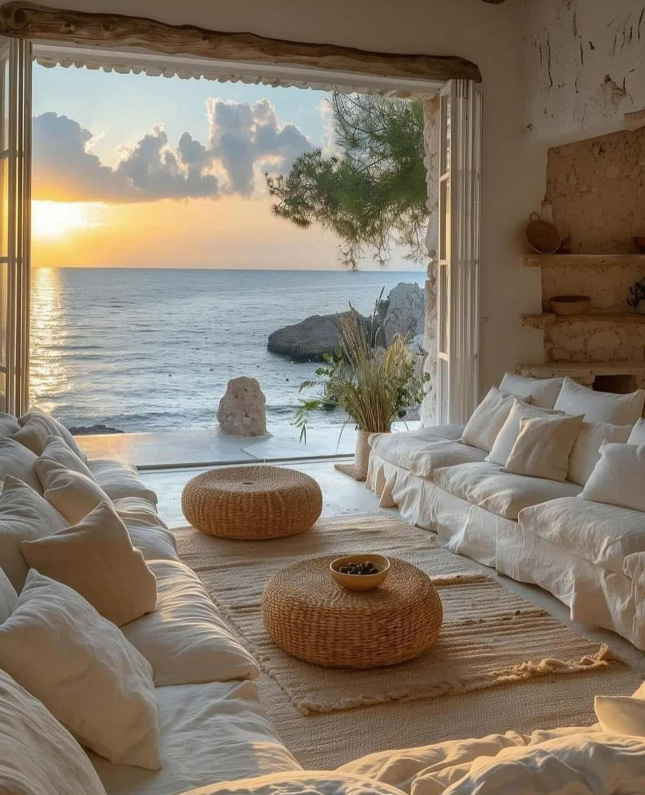

Mediterranean Silence - An artist’s retreat
2026Mediterranean × Japanese × Contemporary Art
The project deliberately brings together three visual languages:
Mediterranean architecture — White, mineral, luminous, organic and connected to the sea.
Japanese simplicity — Low furniture, tatami, empty space, natural materials and contemplation.
Contemporary art — Photography, sculptural objects, graphic contrasts and carefully composed visual frames.
The combination creates something quieter than a conventional luxury interior. It is a form of quiet luxury — based not on abundance, but on atmosphere.
An Artist’s Atelier
The room is intentionally designed to feel less like a conventional living room and more like an artist’s studio.
Large-format photographs of the sea become visual windows. Their pale blue, white and sand tones extend the architecture beyond the physical walls and create the impression of an ever-present Mediterranean horizon.
The large rectangular floor mirror, with its intricate silver-grey frame, becomes an object in its own right — somewhere between furniture, sculpture and artwork.
Nothing is excessively decorative. Each object has space around it. The atmosphere is created through composition, texture, light and silence.
Natural Materials
The tactile dimension is essential to the project.
Jute curtains introduce an earthy, organic texture while a white sheer curtain filters the light from behind them. The contrast between rough woven fibres and delicate translucent fabric creates a dialogue between raw and refined.
The floor mattress, placed directly on a tatami, reinforces the Japanese influence of simplicity and low living.
Silk pale-pink sheets bring softness and sensuality, while the white duvet with restrained black graphic details introduces a contemporary artistic accent.


